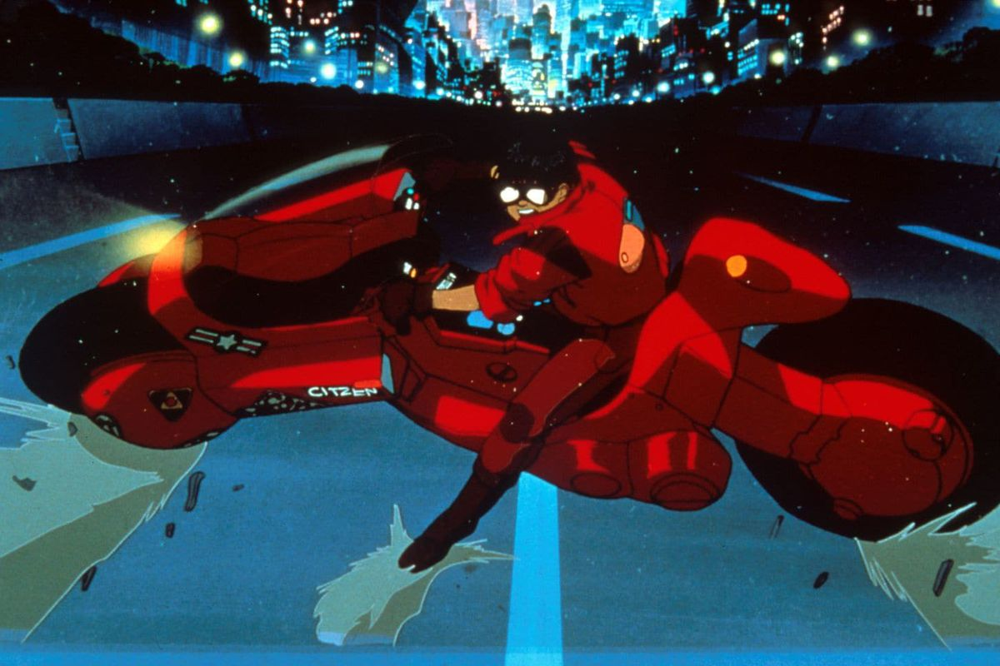

Favorite Movie
My favorite movie is Akira (1988).

Akira is a movie about Neo-Tokyo, built in the aftermath of a singularity that destroys all of Tokyo.
Neo-Tokyo is a futuristic metropolis of the most dystopian fashion. The city is plagued with chaos and rebellion.
The main character, Kaneda leads a biker gang, and in a gang fight Kaneda's best friend Tetsuo crashes into a child
with psychic powers, who has escaped from a military complex with the aid of a resistance. The military recaptures
their psychic child and takes Tetsuo in as well. Tetsuo soon awakens the supernatural powers within him.
It's my favorite movie because the animation is incredible for it's time, the plot is super cool and there's a lot of
character development and small details that I pick up on every time I watch it.
Here's a link to the IMDB webpage.
My Favorite Band
My favorite band is Crystal Castles.
Crystal Castles is an electronic band from Canada, the original two artists were Alice Glass and Ethan Kath. A few years ago Alice departed to do solo work, while
Ethan continued the name of the band with a new partner Edith Francis. The band features heavily filtered electronic music across a wide range of energy.
Some
songs are aggressive and heavy like a wall of sound, while others soft and melodic, almost like a lullaby.

Here's a link to their webpage, and here's a link to their Wikipedia page.